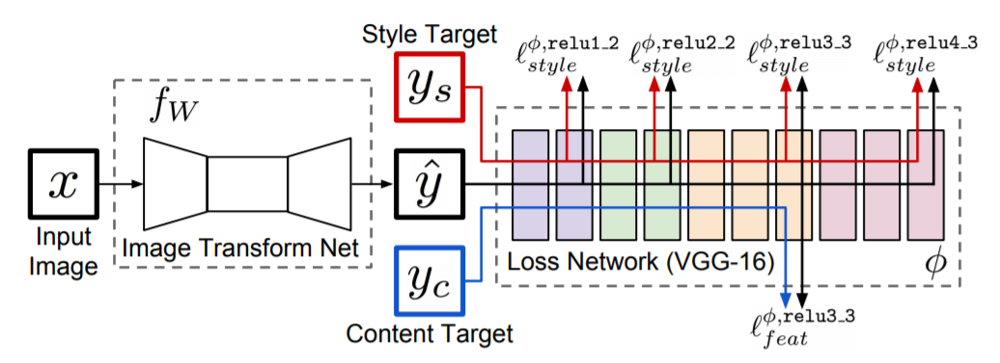
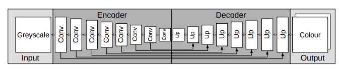
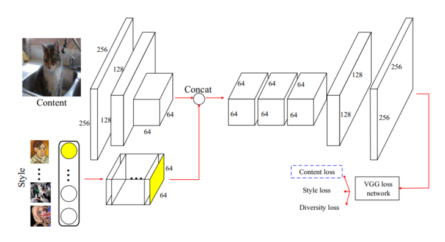
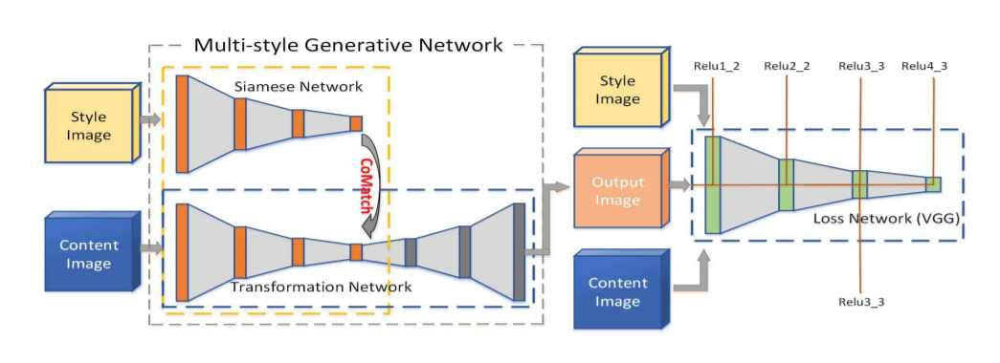
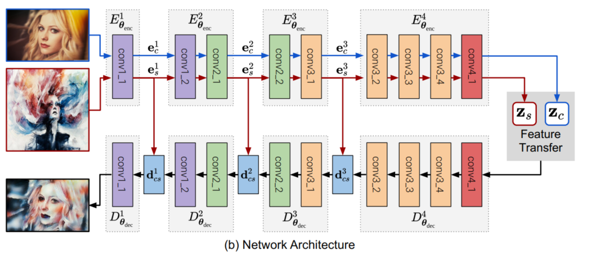
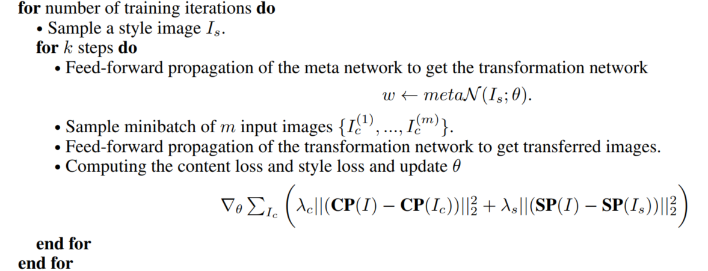
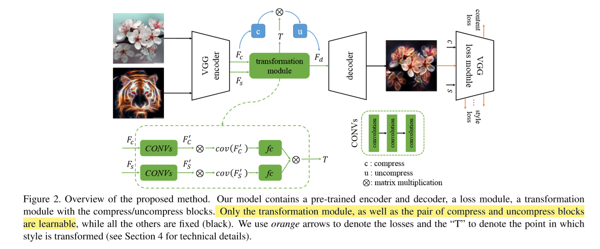

<!DOCTYPE html>
<html lang="en">

<head>
  <meta charset="utf-8" />
    
  <meta name="description" content="Bowen&#39;s Blog" />
  
  <meta name="viewport" content="width=device-width, initial-scale=1, maximum-scale=1" />
  <title>
    Neural Style Transfer Review II |  Bowen&#39;s Blog
  </title>
  <meta name="generator" content="hexo-theme-yilia-plus">
  
  <link rel="shortcut icon" href="/logo.ico" />
  
  
<link rel="stylesheet" href="/css/main.css">

  
  <script src="https://cdn.jsdelivr.net/npm/pace-js@1.0.2/pace.min.js"></script>
  
  

  

<link rel="alternate" href="/atom.xml" title="Bowen's Blog" type="application/atom+xml">
</head>

</html>

<body>
  <div id="app">
    <main class="content">
      <section class="outer">
  <article id="post-Neural-Style-Transfer-Review-II" class="article article-type-post" itemscope
  itemprop="blogPost" data-scroll-reveal>

  <div class="article-inner">
    
    <header class="article-header">
       
<h1 class="article-title sea-center" style="border-left:0" itemprop="name">
  Neural Style Transfer Review II
</h1>
  

    </header>
    

    
    <div class="article-meta">
      <a href="/2020/04/05/Neural-Style-Transfer-Review-II/" class="article-date">
  <time datetime="2020-04-05T15:11:46.000Z" itemprop="datePublished">2020-04-05</time>
</a>
      
  <div class="article-category">
    <a class="article-category-link" href="/categories/Review/">Review</a>
  </div>

      
      
<div class="word_count">
    <span class="post-time">
        <span class="post-meta-item-icon">
            <i class="ri-quill-pen-line"></i>
            <span class="post-meta-item-text"> 字数统计:</span>
            <span class="post-count">5k字</span>
        </span>
    </span>

    <span class="post-time">
        &nbsp; | &nbsp;
        <span class="post-meta-item-icon">
            <i class="ri-book-open-line"></i>
            <span class="post-meta-item-text"> 阅读时长≈</span>
            <span class="post-count">20分钟</span>
        </span>
    </span>
</div>

      
    </div>
    

    
    
    <div class="tocbot"></div>


    

    
    <div class="article-entry" itemprop="articleBody">
      
      

      
      <h1 id="Neural-Style-Transfer-Review-II"><a href="#Neural-Style-Transfer-Review-II" class="headerlink" title="Neural Style Transfer Review II"></a>Neural Style Transfer Review II</h1><h2 id="快速图像重建"><a href="#快速图像重建" class="headerlink" title="快速图像重建"></a>快速图像重建</h2><ul>
<li>提出的原因：解决慢速图像重建效率过低的问题，只需一次前向传播即可完成风格的转换。</li>
<li>问题的目标：在训练集 $I_c$ （内容图片），$I_s$ （风格图片，一种风格或者多种风格）上训练网络 $g$，找到参数 $\theta$:</li>
</ul>
<script type="math/tex; mode=display">\theta^{*}=\underset{\theta}{\arg \min } \mathcal{L}_{\text {total}}\left(I_{c}, I_{s}, g_{\theta^{*}}\left(I_{c}\right)\right), I^{*}=g_{\theta^{*}}\left(I_{c}\right)</script><a id="more"></a>
<h3 id="Parametric-Per-Style-Per-Model"><a href="#Parametric-Per-Style-Per-Model" class="headerlink" title="Parametric Per-Style-Per-Model"></a>Parametric Per-Style-Per-Model</h3><h4 id="Perceptual-losses-for-realtime-style-transfer-and-super-resolution-amp-Texture-networks-Feed-forward-synthesis-of-textures-and-stylized-images"><a href="#Perceptual-losses-for-realtime-style-transfer-and-super-resolution-amp-Texture-networks-Feed-forward-synthesis-of-textures-and-stylized-images" class="headerlink" title="Perceptual losses for realtime style transfer and super-resolution &amp; Texture networks: Feed-forward synthesis of textures and stylized images"></a>Perceptual losses for realtime style transfer and super-resolution &amp; Texture networks: Feed-forward synthesis of textures and stylized images</h4><p>两者的想法相似，都是基于 Gatys 的方法，将其改为一个网络，测试时可以通过一次前向传播得到结果，只不过两者的网络结构不同。</p>
<p></p>
<ul>
<li>训练目标：训练 <strong>Generator Network</strong> 中的参数（卷积核参数等）；</li>
<li>输入：内容图像 $y$；</li>
<li>输出：Generator Network 的 output；</li>
<li>训练手段：$y$ 加上一些随机噪声，经过 Generator Network 之后得到的输出和 style image (不作为显示输入，但计算 loss 的时候需要用到，需要指定) 以及 $y$ 本身（作为 content image）计算 loss，之后 SGD 训练；</li>
<li>训练集：part of ImageNet ILSVRC 2012.</li>
</ul>
<p>Generator Network 使用 multi-scale 的结果。</p>
<p></p>
<ul>
<li>训练目标：和上面类似，$f_W$ 里面的参数；</li>
<li>输入：$x$；</li>
<li>输出：$\hat{y}$；</li>
<li>$x = y_c$；</li>
<li>计算损失并反向传播。</li>
</ul>
<p>Image Transform Net 结构使用了 resnet.</p>
<ul>
<li>优点：速度有明显提升；</li>
<li>缺点：有 Gatys 类方法本身存在的缺陷。</li>
</ul>
<h4 id="Improved-texture-networks-Maximizing-quality-and-diversity-in-feed-forward-stylization-and-texture-synthesis"><a href="#Improved-texture-networks-Maximizing-quality-and-diversity-in-feed-forward-stylization-and-texture-synthesis" class="headerlink" title="Improved texture networks: Maximizing quality and diversity in feed-forward stylization and texture synthesis"></a>Improved texture networks: Maximizing quality and diversity in feed-forward stylization and texture synthesis</h4><p>想法：使用 Instance Normalization 代替 Batch Normalization 即 batch size = 1.</p>
<p>实验发现这样做收敛更快，并且视觉效果更好。一个可能的解释是之前也提到过均值和方差某种意义上也可以代表风格，使用 BN 可能会使得不同的输入图像之间相互干扰，使用 IN 可以更好地消除掉该图像的风格特征，方便学习 style 风格图像的特征。</p>
<h3 id="Non-parametric-Per-Style-Per-Model"><a href="#Non-parametric-Per-Style-Per-Model" class="headerlink" title="Non-parametric Per-Style-Per-Model"></a>Non-parametric Per-Style-Per-Model</h3><h4 id="Precomputed-real-time-texture-synthesis-with-markovian-generative-adversarial-networks"><a href="#Precomputed-real-time-texture-synthesis-with-markovian-generative-adversarial-networks" class="headerlink" title="Precomputed real-time texture synthesis with markovian generative adversarial networks"></a>Precomputed real-time texture synthesis with markovian generative adversarial networks</h4><p>基于 MRF Patch-base 匹配策略，使用 GAN.</p>
<p>由于使用 patch 匹配，空间连续性和观感较好，但对于图像语义的理解有欠缺。</p>
<h3 id="Multiple-Style-Per-Model"><a href="#Multiple-Style-Per-Model" class="headerlink" title="Multiple-Style-Per-Model"></a>Multiple-Style-Per-Model</h3><p>想法：PSPM 每个模型只适用于一种风格，灵活性不够，所以之后提出了 MSPM，一个模型可以完成多种风格的迁移。大致思路有两种：</p>
<ul>
<li>为每个 style 绑定一部分参数，训练时对每个特定的 style 只需改变它所对应的参数，测试时根据想要生成哪种风格的图片决定使用哪种参数，只需输入内容图片并选择参数即可；</li>
<li>无需设置绑定，风格图像和内容图像同时作为输入。</li>
</ul>
<h4 id="每个-style-绑定一部分参数"><a href="#每个-style-绑定一部分参数" class="headerlink" title="每个 style 绑定一部分参数"></a>每个 style 绑定一部分参数</h4><h5 id="A-learned-representation-for-artistic-style"><a href="#A-learned-representation-for-artistic-style" class="headerlink" title="A learned representation for artistic style"></a>A learned representation for artistic style</h5><p>想法：结合之前的工作以及实验发现，将图像进行不同的仿射变换就可以达到不同的风格效果，于是他们将 IN 层变为 CIN (Conditional Instance Normalization)，即：</p>
<script type="math/tex; mode=display">\operatorname{CIN}\left(\mathcal{F}\left(I_{c}\right), s\right)=\gamma^{s}\left(\frac{\mathcal{F}\left(I_{c}\right)-\mu\left(\mathcal{F}\left(I_{c}\right)\right)}{\sigma\left(\mathcal{F}\left(I_{c}\right)\right)}\right)+\beta^{s}</script><p>其中，$s$ 是想要变换的风格在风格集中的序号，每个风格变换需要额外学习 $\gamma, \beta$ 这两个参数。</p>
<p>网络结构：U-Net</p>
<p></p>
<h5 id="StyleBank-An-Explicit-Representation-for-Neural-Image-Style-Transfer"><a href="#StyleBank-An-Explicit-Representation-for-Neural-Image-Style-Transfer" class="headerlink" title="StyleBank: An Explicit Representation for Neural Image Style Transfer"></a>StyleBank: An Explicit Representation for Neural Image Style Transfer</h5><p>想法：将 style 和 content 的训练部分解耦，使用不同的网络部分分别训练这两部分，content 部分由所有风格共享，style 部分根据风格不同划分为不同的子部分，对应不同的风格。</p>
<p>网络结构：</p>
<p></p>
<p>Style bank 层本质上是一个卷积层，对每个不同风格学习一个不同的卷积参数。loss 还是和 Gatys 用的损失函数一样。</p>
<p>上述两种方法确实能够更灵活地转换多种风格，但随着风格数量的增多，网络也将不可避免地变大。</p>
<h4 id="风格图像和内容图像同时作为输入"><a href="#风格图像和内容图像同时作为输入" class="headerlink" title="风格图像和内容图像同时作为输入"></a>风格图像和内容图像同时作为输入</h4><h5 id="Diversified-texture-synthesis-with-feed-forward-networks"><a href="#Diversified-texture-synthesis-with-feed-forward-networks" class="headerlink" title="Diversified texture synthesis with feed-forward networks"></a>Diversified texture synthesis with feed-forward networks</h5><p>想法：只用同一个网络结构，style 和 image 同时输入。</p>
<p>对支持的 style 进行 one-hot 编码，style 部分的网络将对应的 style 加上一个随机噪声之后经过卷积等操作得到 style encoding，再结合上面的 content 部分子网络最后得到输出图片。</p>
<p></p>
<p>PS：diversity loss 是在保证 style 大致类似的情况下做一些变化，避免完全重复。</p>
<h5 id="Multi-style-generative-network-for-realtime-transfer"><a href="#Multi-style-generative-network-for-realtime-transfer" class="headerlink" title="Multi-style generative network for realtime transfer"></a>Multi-style generative network for realtime transfer</h5><p>想法：和上面类似。</p>
<blockquote>
<p>通过 VGG 网络提取到的风格特征与风格化网络中的多个尺度的中间层的 feature map 通过提出的 Inspiration Layer 结合在一起，相当于将风格特征作为信号输入到网络中来决定要风格化成哪一个风格。</p>
</blockquote>
<p></p>
<p>对希望学习到的 $\hat{\mathcal{Y}}^{i}$:</p>
<script type="math/tex; mode=display">\begin{aligned}
\hat{\mathcal{Y}}^{i} &=\underset{\mathcal{Y}^{i}}{\operatorname{argmin}}\left\{\left\|\mathcal{Y}^{i}-\mathcal{F}^{i}\left(x_{c}\right)\right\|_{F}^{2}\right.\\
&\left.+\alpha\left\|\mathcal{G}\left(\mathcal{Y}^{i}\right)-\mathcal{G}\left(\mathcal{F}^{i}\left(x_{s}\right)\right)\right\|_{F}^{2}\right\}
\end{aligned}</script><p>进行一个 content feature 和 target style 进行近似：</p>
<script type="math/tex; mode=display">\hat{\mathcal{Y}}^{i}=\Phi^{-1}\left[\Phi\left(\mathcal{F}^{i}\left(x_{c}\right)\right)^{T} W \mathcal{G}\left(\mathcal{F}^{i}\left(x_{s}\right)\right)\right]^{T}</script><p>$W$ 是需要学习的矩阵。</p>
<p>上面的两种方法在速度上有提升，并且提高了网络的灵活性，但还是只能指定固定的风格种类进行迁移，并且图像结构布局上的一致性有待提升。</p>
<h3 id="Arbitrary-Style-Per-Model"><a href="#Arbitrary-Style-Per-Model" class="headerlink" title="Arbitrary-Style-Per-Model"></a>Arbitrary-Style-Per-Model</h3><p>由于上述模型还是存在局限性，这一类模型希望能够对任意的输入风格进行迁移，而不只局限于特定的几种风格。</p>
<h4 id="Non-parametric-ASPM-with-MRFs"><a href="#Non-parametric-ASPM-with-MRFs" class="headerlink" title="Non-parametric ASPM with MRFs"></a>Non-parametric ASPM with MRFs</h4><h5 id="Fast-patch-based-style-transfer-of-arbitrary-style"><a href="#Fast-patch-based-style-transfer-of-arbitrary-style" class="headerlink" title="Fast patch-based style transfer of arbitrary style"></a>Fast patch-based style transfer of arbitrary style</h5><p>想法：使用 patch 匹配方法在风格图像中抽取特征。</p>
<p>通过 VGG 抽取 style image 和 content image 的 feature 之后对每个 content patch 与最相似的 style patch 交换，之后再进行图像重建。</p>
<p>基本实现了任意风格转换，但效果不是特别优秀。</p>
<h4 id="Parametric-ASPM"><a href="#Parametric-ASPM" class="headerlink" title="Parametric ASPM"></a>Parametric ASPM</h4><h5 id="Arbitrary-style-transfer-in-real-time-with-adaptive-instance-normalization"><a href="#Arbitrary-style-transfer-in-real-time-with-adaptive-instance-normalization" class="headerlink" title="Arbitrary style transfer in real-time with adaptive instance normalization"></a>Arbitrary style transfer in real-time with adaptive instance normalization</h5><p>基于 “A learned representation for artistic style” 的想法，使用 IN 可以拟合风格。</p>
<p>作者提出 AdaIN 来代替 CIN，根据输入风格图像的 feature 来确定 $\sigma, \mu$：</p>
<script type="math/tex; mode=display">\begin{array}{l}
\operatorname{AdaIN}\left(\mathcal{F}\left(I_{c}\right), \mathcal{F}\left(I_{s}\right)\right)= \\
\qquad \sigma\left(\mathcal{F}\left(I_{s}\right)\right)\left(\frac{\mathcal{F}\left(I_{c}\right)-\mu\left(\mathcal{F}\left(I_{c}\right)\right)}{\sigma\left(\mathcal{F}\left(I_{c}\right)\right)}\right)+\mu\left(\mathcal{F}\left(I_{s}\right)\right)
\end{array}</script><p>其中 $\mathcal{F}$ 来源于预训练 VGG，之后的 decode 部分通过生成图片来计算的损失来学习参数。</p>
<p>优点是基本实现了快速转换，缺点是在训练集没有见过的风格上的泛化能力较差，并且如果风格图片比较复杂，生成的效果较差，可能的原因是 AdaIN 结构相对来说太简单了，均值和方差不能完全描述复杂风格。</p>
<h5 id="Dynamic-Instance-Normalization-for-Arbitrary-Style-Transfer"><a href="#Dynamic-Instance-Normalization-for-Arbitrary-Style-Transfer" class="headerlink" title="Dynamic Instance Normalization for Arbitrary Style Transfer"></a>Dynamic Instance Normalization for Arbitrary Style Transfer</h5><p>Yongcheng Jing et al. AAAI 2020.</p>
<p>作者针对 IN 层进行了一些改进，之前有 IN, CIN, AdaIN 三种 IN 类技术，对于 ASPM 使用的 AdaIN，如果希望表现比较好，需要如下条件：</p>
<ul>
<li>content image 和 style image 必须通过同一个 encoder 提取特征；</li>
<li>encoder 的结构要比较复杂，例如使用 VGG，否则可能提取不到特征。</li>
</ul>
<p>这样就导致在一些计算资源受限的场景下，AdaIN 无法很好地发挥作用，因此需要一种不需要很多计算资源也能有很好效果的模型，作者提出了 DIN (Dynamic Instance Normalization)。</p>
<script type="math/tex; mode=display">\operatorname{DIN}\left(\mathcal{F}_{c}, \mathcal{F}_{s}\right)=f\left[\mathcal{F}_{s}, \operatorname{IN}\left(\mathcal{F}_{c}\right)\right]</script><p>DIN 实际上是 IN + Dynamic Convolution，先对 content feature 进行 IN，之后根据 style feature 生成卷积核参数，对 IN 之后的 content feature 进行卷积，并且支持多种卷积操作。</p>
<p>该方法的优点是速度较快，由于可以使用不同的的卷积操作，合成的图像质量还不错。</p>
<h5 id="Universal-Style-Transfer-via-Feature-Transforms"><a href="#Universal-Style-Transfer-via-Feature-Transforms" class="headerlink" title="Universal Style Transfer via Feature Transforms"></a>Universal Style Transfer via Feature Transforms</h5><p>想法：如果使用学习的方法，那么能够支持的风格就和训练集中的风格明显相关，作者希望通过一系列特征变换来解决不能泛化的问题。</p>
<blockquote>
<p>作者发现在 VGG 提取的特征上用 ZCA whitening transform 能够把一张图片的风格信息抹去，而保留原有高级语义信息，之后应用 coloring transform 将风格图的颜色进行迁移，即可重建出效果不错的风格化结果。</p>
</blockquote>
<p>WTC 过程：</p>
<script type="math/tex; mode=display">\hat{f}_{c}=E_{c} D_{c}^{-\frac{1}{2}} E_{c}^{\top} f_{c}</script><p>其中：$D$ 是协方差矩阵的对角矩阵、$E$ 协方差矩阵的正交矩阵。</p>
<p></p>
<p>上色过程（实际上是 WTC 的逆过程）：</p>
<script type="math/tex; mode=display">\hat{f}_{c s}=E_{s} D_{s}^{\frac{1}{2}} E_{s}^{\top} \hat{f}_{c}</script><p>只需预训练重建的 decoder，之后对输入的图像和内容图片进行变换即可。</p>
<p>优点：泛化能力很强，细节方面（笔锋大小等）有待提升。</p>
<h5 id="Avatar-Net-Multi-scale-Zero-shot-Style-Transfer-by-Feature-Decoration"><a href="#Avatar-Net-Multi-scale-Zero-shot-Style-Transfer-by-Feature-Decoration" class="headerlink" title="Avatar-Net Multi-scale Zero-shot Style Transfer by Feature Decoration"></a>Avatar-Net Multi-scale Zero-shot Style Transfer by Feature Decoration</h5><p>Sheng at el. CVPR 2018.</p>
<p>作者提出的也是基于 patch 匹配 + multi-scale 的迁移策略。之前的 style-swap 是基于 patch 匹配的实现，但是实验发现生成的图片太偏向与内容图片，在匹配的时候寻找的 patch 基本上都是风格图片中服从内容图片取值分布的 patch，所以在风格和内容图片差异很大时，效果不好，所以研究人员提出将两张图片变换到同样的特征空间中，在这个空间进行交换，并通过 multi-scale 网络进行重建。</p>
<p>主要步骤：</p>
<p>先将其都投影到相同的特征空间：</p>
<script type="math/tex; mode=display">\overline{\mathbf{z}}_{c}=\mathbf{W}_{c} \otimes\left(\mathbf{z}_{c}-\boldsymbol{\mu}\left(\mathbf{z}_{c}\right)\right), \overline{\mathbf{z}}_{s}=\mathbf{W}_{s} \otimes\left(\mathbf{z}_{s}-\boldsymbol{\mu}\left(\mathbf{z}_{s}\right)\right)</script><p>$W_c, W_s$ 是根据两者协方差矩阵计算出来的 whitening 算子，进行卷积操作之后能保留原本特征的同时服从均匀分布。</p>
<p>之后匹配并进行重组，和 style-swap 类似，这里变换为高效的卷积操作：</p>
<script type="math/tex; mode=display">\overline{\mathbf{z}}_{c s}=\mathbf{\Phi}\left(\overline{\mathbf{z}}_{s}\right)^{\top} \otimes \mathcal{B}\left(\overline{\mathbf{\Phi}}\left(\overline{\mathbf{z}}_{s}\right) \otimes \overline{\mathbf{z}}_{c}\right)</script><p>$\mathcal{B}$ 是对每个 content patch 的匹配结果进行 0-1 打分，取接近的 style patch 为 1，之后交换。</p>
<p>然后将其进行反变换：</p>
<script type="math/tex; mode=display">\mathbf{z}_{c s}=\mathbf{C}_{s} \otimes \overline{\mathbf{z}}_{c s}+\boldsymbol{\mu}\left(\mathbf{z}_{s}\right)</script><p>网络结构：</p>
<p></p>
<p>其中，也用到了一些 AdaIN 的思想：</p>
<script type="math/tex; mode=display">\mathcal{F}_{\mathrm{SF}}\left(\mathbf{d}_{c s}^{l} ; \mathbf{e}_{s}^{l}\right)=\boldsymbol{\sigma}\left(\mathbf{e}_{s}^{l}\right) \circ\left(\frac{\mathbf{d}_{c s}^{l}-\boldsymbol{\mu}\left(\mathbf{d}_{c s}^{l}\right)}{\boldsymbol{\sigma}\left(\mathbf{d}_{c s}^{l}\right)}\right)+\boldsymbol{\mu}\left(\mathbf{e}_{s}^{l}\right)</script><p>通过引入风格特征的统计数值来进一步提升效果。</p>
<p>观察发现图像的总体风格比较一致，但是细节方面可能有轻微形变，也就是 content 内容可能会丢失或改变。</p>
<h5 id="Meta-Networks-for-Neural-Style-Transfer"><a href="#Meta-Networks-for-Neural-Style-Transfer" class="headerlink" title="Meta Networks for Neural Style Transfer"></a>Meta Networks for Neural Style Transfer</h5><p>Shen at el. CVPR 2018.</p>
<p>作者在这里用到了 Meta Network 的想法，提出的背景还是基于 ASPM，以及希望减少模型大小。为了建立输出图片和输入图片之间的映射，作者使用了一个 Meta Network 直接预测这个映射的参数，对于每个新的风格，只需要使用 Meta Network 进行一次前向传播就可以得到一组映射参数，之后输入图片，使用这一组参数就可以得到结果 <em>（存疑：这样可以减少模型的大小）</em>。</p>
<p>简介一下 Meta Network：</p>
<p>考虑如下优化问题，$f(x), h(x)$ 都是已经确定的函数映射，优化目标为：</p>
<script type="math/tex; mode=display">
\| f(x) - f(a) \| + \lambda \| h(x) - h(b) \|</script><p>根据 $a,b$ 是否固定可以分为三种情况：</p>
<ol>
<li>$a = a_0, b=b_0$ 固定，是一个凸优化问题，可以直接使用梯度下降法进行优化；</li>
<li>$b=b_0$ 固定，$a$ 是变量，那么根据 1 可以知道，对每一个固定的 $a$，都有一个 $x$ 使函数达到最优，也就是存在 $\mathcal{N}: a | \rightarrow x$ 的映射，这个映射可以用一个网络拟合，记为 $\mathcal{N}(a;w)$，其中 $w$ 是参数，考虑 Empirical Risk Minimization 找到 $\underset{w}{\operatorname{argmin}} \sum_{a}|f(x)-f(a)|+\lambda\left|h(x)-h\left(b_{0}\right)\right| \text{where } x = \mathcal{N}(a;w)$;</li>
<li>$a, b$ 均为变量，根据 2 可以知道，对每一个固定的 b，都能找到 $\mathcal{N}(a;w)$ 的参数 $w$ 使得优化目标最小，所以存在 $\operatorname{meta} \mathcal{N}: b | \rightarrow \mathcal{N}(\cdot ; w)$，可以通过对 $\theta$ 的优化得到函数最优值，即优化目标变为 $\underset{\theta}{\operatorname{argmin}} \sum_{b} \sum_{a}|f(x)-f(a)|+\lambda|h(x)-h(b)|$.</li>
</ol>
<p>相同的思路，可以将风格转换的优化目标记为：</p>
<script type="math/tex; mode=display">\begin{aligned}
\lambda_c\left\|\mathbf{C P}\left(I ; w_f\right)-\mathbf{C} \mathbf{P}\left(I_c ; w_f\right)\right\|_2^2+ &\\
\lambda_s\left\|\mathbf{S P}\left(I ; w_f\right)-\mathbf{S} \mathbf{P}\left(I_s ; w_f\right)\right\|_2^2
\end{aligned}</script><p>根据技术不同，可以和上面的讨论结合，分为：</p>
<ol>
<li>固定内容和风格图片：$\min_I(\lambda_c\left|\mathbf{C P}\left(I ; w_f\right)-\mathbf{C} \mathbf{P}\left(I_c ; w_f\right)\right|_2^2+ \lambda_s\left|\mathbf{S P}\left(I ; w_f\right)-\mathbf{S} \mathbf{P}\left(I_s ; w_f\right)\right|_2^2 )$，这也就是 Gatys 的基于优化的方法；</li>
<li>不同内容和固定风格图片：<ul>
<li>$\begin{aligned} \min _{w} \sum_{I_{c}}\left(\lambda_{c} | \mathbf{C}\right.&amp;\left(I_{w} ; w_{f}\right)-\mathbf{C} \mathbf{P}\left(I_{c} ; w_{f}\right) |_{2}^{2}+\ &amp;\left.\lambda_{s}\left|\mathbf{S} \mathbf{P}\left(I_{w} ; w_{f}\right)-\mathbf{S} \mathbf{P}\left(I_{s} ; w_{f}\right)\right|_{2}^{2}\right)\ \end{aligned}$</li>
<li>其中 $I_w = \mathcal{N}(I_c;w)$，这就是 Johnson 提出的 PSPM 模型；</li>
</ul>
</li>
<li>不同内容和不同风格图片：<ul>
<li>$\min _{\theta} \sum_{I_{c}, I_{s}}\left(\lambda_{c}\left|\left(\mathbf{C} \mathbf{P}\left(I_{w_{\theta}} ; w_{f}\right)-\mathbf{C} \mathbf{P}\left(I_{c} ; w_{f}\right)\right)\right|_{2}^{2}+\right.$<br>$\left.\lambda_{s}\left|\left(\mathbf{S} \mathbf{P}\left(I_{w_{\theta}} ; w_{f}\right)-\mathbf{S} \mathbf{P}\left(I_{s} ; w_{f}\right)\right)\right|_{2}^{2}\right)$；</li>
<li>这里：$I_{w_\theta} = \mathcal{N}(I_c;w_\theta), w_{\theta} = \mathcal{MetaN}(I_s;\theta)$;</li>
<li>这就是 ASPM 的任务，作者基于这个思路，使用找到最优的参数 $\theta$，以预测 $w$，之后这个网络一次前向传播就得到了输出图片。</li>
</ul>
</li>
</ol>
<p>训练过程如下：</p>
<p></p>
<p>模型比较阶段，作者也和 AdaIN 以及 Johnson 的网络进行了比较，作者也提到了 AdaIN 效果的优秀很依赖于 VGG-19 的深层编码，实验发现如果使用了其他较浅的编码器那么 AdaIN 的效果会变差。这篇工作不需要很深的编码器，作者也比较了自己的模型比较小，但这里他并没有把自己预测参数的网络的大小算进去，所以得到自己模型显著小于其他人的结论还是存在疑问（预测参数的网络也是使用 VGG-19，所以肯定不会太小）。</p>
<p>对比阶段也只和 Gatys 以及 Johnson 的工作比了一下效果，中规中矩，没有更多的比较结果。</p>
<h5 id="ZM-Net-Real-time-Zero-shot-Image-Manipulation-Network"><a href="#ZM-Net-Real-time-Zero-shot-Image-Manipulation-Network" class="headerlink" title="ZM-Net: Real-time Zero-shot Image Manipulation Network"></a>ZM-Net: Real-time Zero-shot Image Manipulation Network</h5><p>Wang at el. </p>
<p>作者将风格迁移重新归纳为给定指导信号，根据该信号对图像重新变形的过程。这里的指导信号不局限于风格图片，还有可能是文本信号或者直方图信息等等，这使得任务适应的领域更加广泛。</p>
<p>作者提出了 P-Net + T-Net 的网络结构方式，T-Net 用来对图像进行变换，P-Net 用来生成 T-Net 中的一些跟指导信号有关的参数，这样来实现泛化（对任意风格都能进行变换）。</p>
<p>实际上，为了实现 T-Net 中动态根据不同指导信号生成风格，作者提出了 DIN 层，这里的 DIN 就是把之前的 CIN 里面与每个风格绑定的参数改为了由 P-Net 根据风格生成的参数。P-Net 的主要作用就是根据指导信号生成这些参数，方式可以是卷积或者线性投影等。主要的公式如下：</p>
<script type="math/tex; mode=display">y_{i j k}=\frac{x_{i j k}-\mu_{i}}{\sqrt{\sigma_{i}^{2}+\epsilon}} \gamma_{i}\left(\mathbf{X}_{s}\right)+\boldsymbol{\beta}_{i}\left(\mathbf{X}_{s}\right),\\
\gamma^{(l)}\left(\mathbf{X}_{s}\right)=\psi_{l}\left(\mathbf{X}_{s}\right) \mathbf{W}_{\gamma}^{(l)}+\mathbf{b}_{\gamma}^{(l)} \\
\boldsymbol{\beta}^{(l)}\left(\mathbf{X}_{s}\right)=\psi_{l}\left(\mathbf{X}_{s}\right) \mathbf{W}_{\beta}^{(l)}+\mathbf{b}_{\beta}^{(l)}</script><p>实验中使用了训练数据扩展，使用 Gatys 的模型，选取 300 张风格图片，若干内容图片输入到模型中得到输出，作为扩展的训练数据，据作者指出这样使得 Loss 减少了一半，并且能够提高在没有见过的风格中的表现 <em>（但感觉有效的风格并没有增加，也能叫做扩展训练集中的风格吗？）</em>。</p>
<p>Word Embedding 作为指导信号。作者只训练了针对 noon, night 的模型，该模型的 P-Net 使用 word embedding 作为输入信号，并且 T-Net 和使用风格图片输入的模型中的 T-Net 不是相同的参数。训练数据就是一些带标签（noon, night）的图片，并且能够泛化到没见过的词语，如：morning, afternoon。不过感觉还是不成熟。</p>
<p>因为是根据输入风格预测的参数，虽然解决了 MSPM 中 CIN 不能泛化的问题，但是生成图像的质量堪忧，不过 guiding signal 中不仅限于风格图片的思路还是比较新，word embedding 这一类的任务有改进的空间。</p>
<h5 id="Learning-Linear-Transformations-for-Fast-Image-and-Video-Style-Transfer"><a href="#Learning-Linear-Transformations-for-Fast-Image-and-Video-Style-Transfer" class="headerlink" title="Learning Linear Transformations for Fast Image and Video Style Transfer"></a>Learning Linear Transformations for Fast Image and Video Style Transfer</h5><p>Li at el. CVPR 2019.</p>
<p>针对之前 ASPM 模型中计算过于复杂或者过于简单（如 AdaIN，只考虑均值和方差，并没有考虑协方差），在某些情况下表现不好的问题，作者提出了 Linear Transformation 这种提高效率并加入协方差的方法。</p>
<p>作者的方法本质上是将 “Universal Style Transfer via Feature Transforms” 中 WCT 的矩阵分解变为一个全连接层预测矩阵分解的结果：</p>
<script type="math/tex; mode=display">T=\left(V_{s} D_{s}^{\frac{1}{2}} V_{s}^{\top}\right) U\left(V_{c} D_{c}^{-\frac{1}{2}} V_{c}^{\top}\right)</script><p>因为全连接比分解更快，所以效率更高。并且线性变换能够防止扭曲，在照片风格迁移中能发挥作用。并且作者发现，decoder 中过多的非线性层、协方差矩阵的秩过大和最高层的分辨率过大都是可能导致扭曲的原因，所以作者使用较浅的 encoder-decoder （相比 AdaIN 和 WCT），效率也因此更高。（AdaIN 和 WCT 在 encoder-decoder 较浅的时候表现不好）。</p>
<p></p>
<p>效率方面比 WCT 有很大提高，转换效果也说得过去，但因为是预测而不是真的矩阵分解，个人感觉还是 WCT 的效果好一些，并且观察感觉在图片风格迁移中有出现失真的情况。</p>
<h2 id="一些拓展领域"><a href="#一些拓展领域" class="headerlink" title="一些拓展领域"></a>一些拓展领域</h2><p>一些应用主要从提高生产作品的观感体验或者迁移到其他领域对当前的方法进行拓展。</p>
<ul>
<li>提高观感效果；</li>
<li>根据图像语义进行迁移；</li>
<li>图片中特定物体风格迁移；</li>
<li>根据涂鸦生成艺术画；</li>
<li>场景迁移；</li>
<li>肖像迁移；</li>
<li>视频风格迁移；</li>
<li>真实场景风格迁移；</li>
<li>弱监督属性迁移；</li>
<li>时尚风格迁移；</li>
<li>音频风格迁移。</li>
</ul>
<!-- 知识蒸馏、对抗学习、NLP 辅助 -->
<h2 id="参考文献"><a href="#参考文献" class="headerlink" title="参考文献"></a>参考文献</h2><p><a href="https://zhuanlan.zhihu.com/p/36346074" target="_blank" rel="noopener">[1] 图像风格化算法综述三部曲</a></p>
<p><a href="https://arxiv.org/abs/1705.04058" target="_blank" rel="noopener">[2] Neural Style Transfer: A Review</a></p>

      
      <!-- reward -->
      
      <div id="reward-btn">
        打赏
      </div>
      
    </div>
    
    
      <!-- copyright -->
      
        <div class="declare">
          <ul class="post-copyright">
            <li>
              <i class="ri-copyright-line"></i>
              <strong>版权声明： </strong s>
              本博客所有文章除特别声明外，均采用 <a href="https://www.apache.org/licenses/LICENSE-2.0.html" rel="external nofollow"
                target="_blank">Apache License 2.0</a> 许可协议。转载请注明出处！
            </li>
          </ul>
        </div>
        
    <footer class="article-footer">
      
          
<div class="share-btn">
      <span class="share-sns share-outer">
        <i class="ri-share-forward-line"></i>
        分享
      </span>
      <div class="share-wrap">
        <i class="arrow"></i>
        <div class="share-icons">
          
          <a class="weibo share-sns" href="javascript:;" data-type="weibo">
            <i class="ri-weibo-fill"></i>
          </a>
          <a class="weixin share-sns wxFab" href="javascript:;" data-type="weixin">
            <i class="ri-wechat-fill"></i>
          </a>
          <a class="qq share-sns" href="javascript:;" data-type="qq">
            <i class="ri-qq-fill"></i>
          </a>
          <a class="douban share-sns" href="javascript:;" data-type="douban">
            <i class="ri-douban-line"></i>
          </a>
          <!-- <a class="qzone share-sns" href="javascript:;" data-type="qzone">
            <i class="icon icon-qzone"></i>
          </a> -->
          
          <a class="facebook share-sns" href="javascript:;" data-type="facebook">
            <i class="ri-facebook-circle-fill"></i>
          </a>
          <a class="twitter share-sns" href="javascript:;" data-type="twitter">
            <i class="ri-twitter-fill"></i>
          </a>
          <a class="google share-sns" href="javascript:;" data-type="google">
            <i class="ri-google-fill"></i>
          </a>
        </div>
      </div>
</div>

<div class="wx-share-modal">
    <a class="modal-close" href="javascript:;"><i class="ri-close-circle-line"></i></a>
    <p>扫一扫，分享到微信</p>
    <div class="wx-qrcode">
      
    </div>
</div>

<div id="share-mask"></div>
      
      
  <ul class="article-tag-list" itemprop="keywords"><li class="article-tag-list-item"><a class="article-tag-list-link" href="/tags/CV/" rel="tag">CV</a></li><li class="article-tag-list-item"><a class="article-tag-list-link" href="/tags/Style-Transfer/" rel="tag">Style Transfer</a></li></ul>


    </footer>

  </div>

  
  
  <nav class="article-nav">
    
      <a href="/2020/04/09/Neural-Style-Transfer-Review-III/" class="article-nav-link">
        <strong class="article-nav-caption">上一篇</strong>
        <div class="article-nav-title">
          
            Neural Style Transfer Review III
          
        </div>
      </a>
    
    
      <a href="/2020/04/01/Batch-Normalization/" class="article-nav-link">
        <strong class="article-nav-caption">下一篇</strong>
        <div class="article-nav-title">Batch Normalization</div>
      </a>
    
  </nav>


  

  
  
<!-- valine评论 -->
<div id="vcomments-box">
    <div id="vcomments">
    </div>
</div>
<script src="//cdn1.lncld.net/static/js/3.0.4/av-min.js"></script>
<script src='https://cdn.jsdelivr.net/npm/valine@1.3.10/dist/Valine.min.js'></script>
<script>
    new Valine({
        el: '#vcomments',
        app_id: '',
        app_key: '',
        path: window.location.pathname,
        notify: 'false',
        verify: 'false',
        avatar: 'mp',
        placeholder: '给我的文章加点评论吧~',
        recordIP: true
    });
    const infoEle = document.querySelector('#vcomments .info');
    if (infoEle && infoEle.childNodes && infoEle.childNodes.length > 0) {
        infoEle.childNodes.forEach(function (item) {
            item.parentNode.removeChild(item);
        });
    }
</script>
<style>
    #vcomments-box {
        padding: 5px 30px;
    }

    @media screen and (max-width: 800px) {
        #vcomments-box {
            padding: 5px 0px;
        }
    }

    #vcomments-box #vcomments {
        background-color: #fff;
    }

    .v .vlist .vcard .vh {
        padding-right: 20px;
    }

    .v .vlist .vcard {
        padding-left: 10px;
    }
</style>

  

  
  
  

</article>
</section>
      <footer class="footer">
  <div class="outer">
    <ul class="list-inline">
      <li>
        &copy;
        2020
        Bowen
      </li>
      <li>
        
        Powered by
        
        
        <a href="https://hexo.io" target="_blank">Hexo</a> Theme <a href="https://github.com/Shen-Yu/hexo-theme-ayer" target="_blank">Ayer</a>
        
      </li>
    </ul>
    <ul class="list-inline">
      <li>
        
      </li>
      
      <li>
        <!-- cnzz统计 -->
        
      </li>
    </ul>
  </div>
</footer>
      <div class="to_top">
        <div class="totop" id="totop">
  <i class="ri-arrow-up-line"></i>
</div>
      </div>
    </main>
    <aside class="sidebar">
      <button class="navbar-toggle"></button>
<nav class="navbar">
  
  <div class="logo">
    <a href="/"></a>
  </div>
  
  <ul class="nav nav-main">
    
    <li class="nav-item">
      <a class="nav-item-link" href="/">主页</a>
    </li>
    
    <li class="nav-item">
      <a class="nav-item-link" href="/archives">归档</a>
    </li>
    
    <li class="nav-item">
      <a class="nav-item-link" href="/categories">分类</a>
    </li>
    
    <li class="nav-item">
      <a class="nav-item-link" href="/tags">标签</a>
    </li>
    
    <li class="nav-item">
      <a class="nav-item-link" href="http://home.ustc.edu.cn/~zhangbowen" target="_blank" rel="noopener">关于我</a>
    </li>
    
  </ul>
</nav>
<nav class="navbar navbar-bottom">
  <ul class="nav">
    <li class="nav-item">
      
      <a class="nav-item-link nav-item-search"  title="Search">
        <i class="ri-search-line"></i>
      </a>
      
      
      <a class="nav-item-link" target="_blank" href="/atom.xml" title="RSS Feed">
        <i class="ri-rss-line"></i>
      </a>
      
    </li>
  </ul>
</nav>
<div class="search-form-wrap">
  <div class="local-search local-search-plugin">
  <input type="search" id="local-search-input" class="local-search-input" placeholder="Search...">
  <div id="local-search-result" class="local-search-result"></div>
</div>
</div>
    </aside>
    <div id="mask"></div>

<!-- #reward -->
<div id="reward">
  <span class="close"><i class="ri-close-line"></i></span>
  <p class="reward-p"><i class="ri-cup-line"></i>请我喝杯咖啡吧~</p>
  <div class="reward-box">
    
    <div class="reward-item">
      
      <span class="reward-type">支付宝</span>
    </div>
    
    
    <div class="reward-item">
      
      <span class="reward-type">微信</span>
    </div>
    
  </div>
</div>
    
<script src="/js/jquery-2.0.3.min.js"></script>


<script src="/js/share.js"></script>


<script src="/js/lazyload.min.js"></script>


<script>
  try {
    var typed = new Typed("#subtitle", {
      strings: ['没有什么会永垂不朽', '想要的都拥有，得不到的都释怀', ''],
      startDelay: 0,
      typeSpeed: 200,
      loop: true,
      backSpeed: 100,
      showCursor: true
    });
  } catch (err) {
  }

</script>


<script src="/js/tocbot.min.js"></script>

<script>
  // Tocbot_v4.7.0  http://tscanlin.github.io/tocbot/
  tocbot.init({
    tocSelector: '.tocbot',
    contentSelector: '.article-entry',
    headingSelector: 'h1, h2, h3, h4, h5, h6',
    hasInnerContainers: true,
    scrollSmooth: true,
    scrollContainer: 'main',
    positionFixedSelector: '.tocbot',
    positionFixedClass: 'is-position-fixed',
    fixedSidebarOffset: 'auto',
    onClick: (e) => {
      $('.toc-link').removeClass('is-active-link');
      $(`a[href=${e.target.hash}]`).addClass('is-active-link');
      $(e.target.hash).scrollIntoView();
      return false;
    }
  });
</script>


<script src="https://cdn.jsdelivr.net/npm/jquery-modal@0.9.2/jquery.modal.min.js"></script>
<link rel="stylesheet" href="https://cdn.jsdelivr.net/npm/jquery-modal@0.9.2/jquery.modal.min.css">
<script src="https://cdn.jsdelivr.net/npm/justifiedGallery@3.7.0/dist/js/jquery.justifiedGallery.min.js"></script>

<script src="/js/ayer.js"></script>


<!-- Root element of PhotoSwipe. Must have class pswp. -->
<div class="pswp" tabindex="-1" role="dialog" aria-hidden="true">

    <!-- Background of PhotoSwipe. 
         It's a separate element as animating opacity is faster than rgba(). -->
    <div class="pswp__bg"></div>

    <!-- Slides wrapper with overflow:hidden. -->
    <div class="pswp__scroll-wrap">

        <!-- Container that holds slides. 
            PhotoSwipe keeps only 3 of them in the DOM to save memory.
            Don't modify these 3 pswp__item elements, data is added later on. -->
        <div class="pswp__container">
            <div class="pswp__item"></div>
            <div class="pswp__item"></div>
            <div class="pswp__item"></div>
        </div>

        <!-- Default (PhotoSwipeUI_Default) interface on top of sliding area. Can be changed. -->
        <div class="pswp__ui pswp__ui--hidden">

            <div class="pswp__top-bar">

                <!--  Controls are self-explanatory. Order can be changed. -->

                <div class="pswp__counter"></div>

                <button class="pswp__button pswp__button--close" title="Close (Esc)"></button>

                <button class="pswp__button pswp__button--share" style="display:none" title="Share"></button>

                <button class="pswp__button pswp__button--fs" title="Toggle fullscreen"></button>

                <button class="pswp__button pswp__button--zoom" title="Zoom in/out"></button>

                <!-- Preloader demo http://codepen.io/dimsemenov/pen/yyBWoR -->
                <!-- element will get class pswp__preloader--active when preloader is running -->
                <div class="pswp__preloader">
                    <div class="pswp__preloader__icn">
                        <div class="pswp__preloader__cut">
                            <div class="pswp__preloader__donut"></div>
                        </div>
                    </div>
                </div>
            </div>

            <div class="pswp__share-modal pswp__share-modal--hidden pswp__single-tap">
                <div class="pswp__share-tooltip"></div>
            </div>

            <button class="pswp__button pswp__button--arrow--left" title="Previous (arrow left)">
            </button>

            <button class="pswp__button pswp__button--arrow--right" title="Next (arrow right)">
            </button>

            <div class="pswp__caption">
                <div class="pswp__caption__center"></div>
            </div>

        </div>

    </div>

</div>

<link rel="stylesheet" href="https://cdn.jsdelivr.net/npm/photoswipe@4.1.3/dist/photoswipe.min.css">
<link rel="stylesheet" href="https://cdn.jsdelivr.net/npm/photoswipe@4.1.3/dist/default-skin/default-skin.min.css">
<script src="https://cdn.jsdelivr.net/npm/photoswipe@4.1.3/dist/photoswipe.min.js"></script>
<script src="https://cdn.jsdelivr.net/npm/photoswipe@4.1.3/dist/photoswipe-ui-default.min.js"></script>

<script>
    function viewer_init() {
        let pswpElement = document.querySelectorAll('.pswp')[0];
        let $imgArr = document.querySelectorAll(('.article-entry img:not(.reward-img)'))

        $imgArr.forEach(($em, i) => {
            $em.onclick = () => {
                // slider展开状态
                // todo: 这样不好，后面改成状态
                if (document.querySelector('.left-col.show')) return
                let items = []
                $imgArr.forEach(($em2, i2) => {
                    let img = $em2.getAttribute('data-idx', i2)
                    let src = $em2.getAttribute('data-target') || $em2.getAttribute('src')
                    let title = $em2.getAttribute('alt')
                    // 获得原图尺寸
                    const image = new Image()
                    image.src = src
                    items.push({
                        src: src,
                        w: image.width || $em2.width,
                        h: image.height || $em2.height,
                        title: title
                    })
                })
                var gallery = new PhotoSwipe(pswpElement, PhotoSwipeUI_Default, items, {
                    index: parseInt(i)
                });
                gallery.init()
            }
        })
    }
    viewer_init()
</script>


<script type="text/x-mathjax-config">
  MathJax.Hub.Config({
      tex2jax: {
          inlineMath: [ ['$','$'], ["\\(","\\)"]  ],
          processEscapes: true,
          skipTags: ['script', 'noscript', 'style', 'textarea', 'pre', 'code']
      }
  });

  MathJax.Hub.Queue(function() {
      var all = MathJax.Hub.getAllJax(), i;
      for(i=0; i < all.length; i += 1) {
          all[i].SourceElement().parentNode.className += ' has-jax';
      }
  });
</script>

<script src="https://cdn.jsdelivr.net/npm/mathjax@2.7.6/unpacked/MathJax.js?config=TeX-AMS-MML_HTMLorMML"></script>
<script>
  var ayerConfig = {
    mathjax: true
  }
</script>


<script type="text/javascript" src="https://js.users.51.la/20544303.js"></script>

    
    <div id="music">
    
    
    
    <iframe frameborder="no" border="1" marginwidth="0" marginheight="0" width="200" height="52"
        src="//music.163.com/outchain/player?type=3&id=2063028227&auto=0&height=32"></iframe>
</div>

<style>
    #music {
        position: fixed;
        right: 15px;
        bottom: 0;
        z-index: 998;
    }
</style>
    
  </div>
</body>

</html>